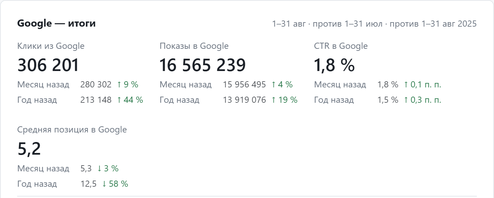
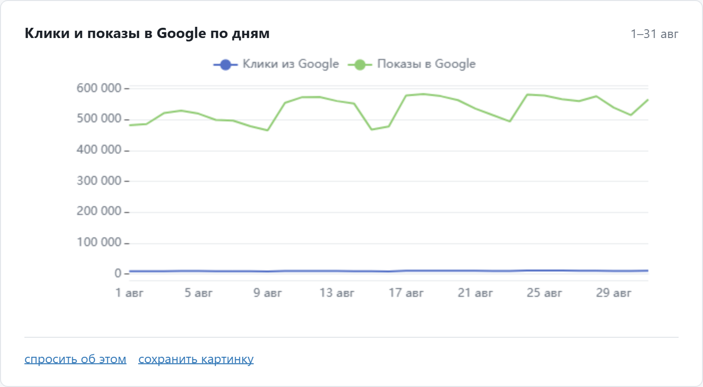
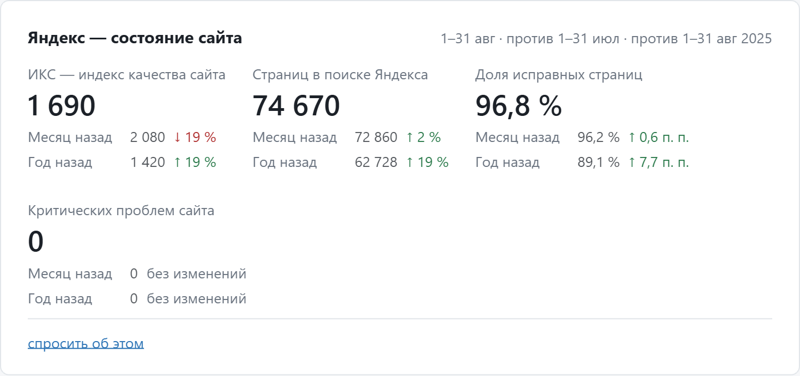
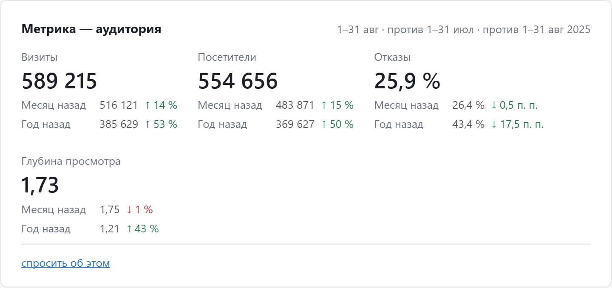
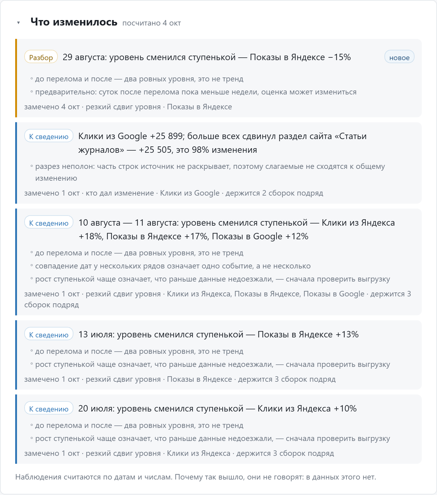

Google Search Console, Яндекс Вебмастер и Яндекс Метрика на одной панели. Система сама показывает, что изменилось, а на вопрос обычными словами отвечает числами из ваших данных.

Система не смешивает источники в один показатель. Она собирает их в одном месте и оставляет за каждым его термины, отчёты и правила подсчёта.
Как сайт выглядит в выдаче Google и сколько переходов получает до визита.
Какие страницы Яндекс видит в поиске и какие проблемы считает важными.
Состояния привязаны к дате: их не складывают как события за период.
Что человек делал после перехода на сайт.
Поведение читается отдельно от поисковых кликов и показов.



Панели демо-версии
Перед отчётами система показывает, насколько свежи данные каждого источника, и собирает блок «Что изменилось»: резкий рост, просадку, смену уровня.
Наблюдение отвечает на вопросы «где» и «когда». Причину система не придумывает: её проверяет человек, а система подсказывает, куда смотреть.

Чат знает, какие данные есть в проекте, и считает ответ из них. Можно начать с готового вопроса и уточнять дальше.
Ответ даётся только там, где есть числа. SEO-рекомендаций и придуманных причин чат не выдаёт.
Бывает, что нужного разреза нет в регулярных выгрузках: внешние ссылки, редкий отчёт Вебмастера, нестандартный срез Метрики. Тогда чат не отвечает «не знаю», а предлагает разовый запрос к API источника:
Если такой отчёт нужен регулярно, его можно добавить в ежедневные выгрузки.
Основные отчёты уже собраны: итоги по каждому источнику, динамика, запросы, страницы, источники трафика, цели. Под задачи команды набор быстро перенастраивается в веб-редакторе, без программиста:
Перед сохранением редактор проверяет настройку: ошибочная конфигурация не сломает работающий дашборд. Таблицы и графики выгружаются в CSV, PNG или PDF.
Языковая модель только переводит вопрос в запрос к данным. Считает сервер, поэтому число в ответе всегда совпадает с числом в базе.
YandexGPT, Xiaomi MiMo или Claude — выбирается настройкой. Смена модели не затрагивает отчёты и данные.
Python · DuckDB · FastAPI
Сервер на Ubuntu. Ежедневная сборка данных занимает от минуты до пяти в зависимости от размера сайта.
Разбираем задачи команды и список сайтов, решаем, какие отчёты нужны в первую очередь.
Вы выдаёте права на чтение в Search Console, Вебмастере и Метрике и ключ к выбранной модели ИИ.
Разворачиваем систему на вашем сервере или на арендованном, настраиваем вход по защищённому адресу.
Забираем всю доступную историю: в GSC это 16 месяцев, в Метрике — с момента установки счётчика.
Подключаем сайты, цели Метрики, панели; проверяем числа сверкой с кабинетами источников.
Показываем команде дашборд и чат, передаём инструкцию.
Следим за ежедневными выгрузками, обновляем систему и дорабатываем её по вашему запросу: новые отчёты, показатели, источники.
Чего пока нет в первой версии, но что мы собираемся добавить.
Порядок зависит от запросов клиентов: то, что нужно вашей команде, можно сделать раньше в рамках доработки.
Покажу, как система ляжет на задачи вашей команды и данные конкретного сайта.